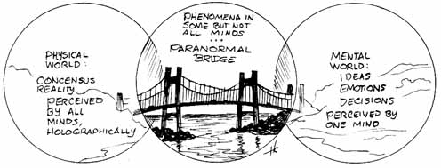
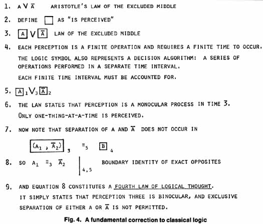
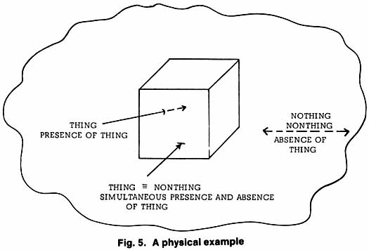

Psychotronics,
unidentified flying objects (UFO's), and paranormal phenomena such as
psychokinesis, telepathy, and precognition all have one thing in common:
both mind and matter-energy are involved.
Hitherto, mainstream science has insisted on a
rather arbitrary separation of mind and matter-energy. However, as we
shall see, this separation is not based on good observation. For
example, everyone exhibits in himself the ability of mind to affect
matter. While theories of computers, control systems, and physics can explain human behavior once the physical system has been given an input
signal, the original signal - intent, or what I call inception - is an
unexplained mystery to ordinary science.
"Psychotronics" (a Czechoslovakian
term) and "psychoenergetics" (a Soviet term) have been
specifically designed to provide a framework for approaching the
problems of mind, matter, and their interaction. If we can understand
psychotronics, we will be able to understand better the interaction of
mind and matter, including all paranormal phenomena, unidentified flying
objects, and Fortean phenomena.
Let us therefore start by defining
psychotronics. The prefix "psycho" refers to the mind.
The
suffix "tronics" refers to physics and physical devices.
Thus
the concept of psychotronics refers to a union of physics and
metaphysics. Such an audacious concept can offer a solution to almost
every present problem in meta physics, the foundations of logic, the
foundations of physics, and the foundations of mathematics.
To begin with, it seems necessary to form a
unified theory of mind, matter, and their interaction. It also seems
necessary to reinterpret and extend electromagnetic theory. Logic itself
must be advanced, for a part of reality, although "illogical"
according to our present logic, is nonetheless true. In metaphysics we
must solve formidable problems: the ontological problem (nature of
being); the problem of mind, and the interaction of mind and body; the
problem of change; and the problem of nothing.
It has been said that fools rush in where angels
fear to tread. To tackle the problems of psychotronics demands the
audacity to rush in where even fools fear to tread!
At this time, it may be appropriate to
point out that all Western science, mathematics, and logic are founded
upon three simple laws of logic, proposed and formulated by Aristotle.
Since the entire universe cannot be described by these three laws -
parts of reality are known to violate one or more of them and hence be
illogical though true - it appears that we must be audacious enough to
tackle and change the three laws of logic, if a new paradigm is to be
constructed to solve all the presently unsolved problems.
SOME UNEXPLAINED MYSTERIES OF PHYSICS
First, no one knows what mass really
is; we do not know for sure whether inertial and gravitational mass are
one and the same. General relativity says it is, and we know from
experiments that if any difference exists between inertial mass and
gravitational mass that difference is very small indeed. But we do not
know positively that there is not some small but finite difference.
And
we have no idea why the mass of a moving object
increases with respect to a static observer. It is simple to calculate
in special relativity how much the mass increases as a function of the
velocity, but no one has the foggiest notion why this happens.
Particularly so since an observer standing on the moving object and
moving along with it sees no increase in its mass at all.
This poses a real paradox; if we try to assign
some absolute notion to the idea of mass, then any object has an
infinite number of masses, all at the same time and all different.
There
are two ways to determine mass: (1) by its resistance to a disturbing
force, and (2) by its ability to occupy three-dimensional space. The
latter requires that mass be volumetric, i.e., that mass be L3
dimensionally.
But look at the weird properties of a photon!
If we measure its resistance to a disturbing force, we find that no
force on earth can accelerate or decelerate the photon. If we measure
the mass of a photon by the first method, it appears to have infinite
mass. Yet if we measure it by the second method, it can have no
mass at all, because a photon is not volumetric; it is two-dimensional.
It therefore has infinite mass and zero mass simultaneously.
Furthermore, we can take the viewpoint that
whatever its mass is, it can only have one. If that is so, then infinite
mass and zero mass must somehow be the same thing! Which
contradicts the three laws of logic. However, this should not
concern us too greatly; many things contradict the laws of logic and are
nonetheless true. So while it is presently "illogical"
for infinite mass and zero mass to be identical, we should hold on to
the idea that this may very well be true.
Additionally, one of the great cornerstone
assumptions in physics is that gravitational field and electric field
are mutually exclusive - i.e., they are totally different things.
Yet a physicist named Santilli has proved that this is not so, and that
they are either partially the same thing or totally the same thing.
And there the matter stands, so we do not fully understand what electric
field and gravitational field are, or how to go about turning one into
the other, although Santilli's work seems to imply that this is at least
theoretically possible. We must therefore invoke a new concept of
reality.
URI GELLER
Uri Geller
has demonstrated numerous capabilities: he has affected a magnometer
inside a Faraday shield; bent and broken metal objects; caused a fresh
flower to wither and dry in seconds; permanently changed the crystal
structure of nitinol; altered magnetic programs on computer cards;
influenced a Geiger counter; de materialized matter; and demonstrated
the inceptive Cyborg effect, thought-photography, telepathy, and the
Geller effect (the sympathetic stimulation of a psi-positive).
It is useless to attempt to explain the feats
performed by Uri Geller in terms of the ordinary fields and effects of
known physics. Nothing short of a new physics paradigm will suffice.
This new paradigm must encompass both mind and physics within the same
theoretical framework, if it is to succeed in explaining how mind
affects matter.
In terms of present physics and logic, the mind is
regarded as totally separate from matter. For mind and matter to
interact, some aspect of mind must be the same as some aspect of matter,
i.e., to move matter, a force is required. Force is the time rate of
change of momentum. To generate a force capable of moving matter, mind
must be able to change momentum. But since momentum can only be obtained
from something which possesses momentum to give up, then the mind must
somehow possess momentum.
If this is so, then the momentum must ordinarily
exist in a separate three-dimensional space, since it apparently does
not ordinarily exist in laboratory three-dimensional space. Such a
situation requires at least six spatial dimensions and one common time
dimension, such that the mind (mental phenomena) is a set of objective
physical phenomena existing in an ordinary objective three-dimensional
space, but one which is three orthogonalities away, spatially, from the
laboratory three-dimensional space.
Mental changes upon physical objects would thus
imply orthogonal rotation of mental objects from the mental
three-dimensional space into or closer to the laboratory
three-dimensional space. Everett's many-worlds interpretation (MWI) of
quantum mechanics contains a structure where such representation is
possible, and the MWI is consistent with the entire experimental basis
of modern physics. Thus from the MWI it is possible to objectively model
the mind and matter, and from that, psychotronics as well.
MY APPROACH TO PSYCHOTRONICS
In twelve years of
intensive work on this question, I have evolved a conceptual approach,
which is consistent with present physics but extends it. A new concept of
reality is involved, however, and severe demands are made on the
individual to stretch his framework of comprehension. The perceptron
concept is an abstraction that allows the modeling of perception itself -
either mental perception or physical detection. The fourth law of logic
(to be explained shortly) involves the age-old identity of opposites whose
apparent necessity has baffled logicians, philosophers, and scientists for
centuries. With the perceptron concept, we can at last comprehend how the
identity of opposites is accomplished, and when it is accomplished.
This immediately solves the age-old philosophical
problem of change. The fourth law also closes logic into a complete,
closed metalogic, encompassing both physics and metaphysics.
Let us use as a definition of reality: reality
is that which can be conceptually and mathematically modeled and fitted to
the phenomena existing in one or more minds. Physical reality is
that which can be modeled and fitted to the phenomena existing in all
minds. Mental reality can be modeled and fitted to the phenomena in
one mind. Mental and physical realities comprise "normal"
reality. Complex or "paranormal" reality is that which can be
conceptually and mathematically modeled and fitted to phenomena which
exist in more than one mind, but not in all minds.
From perception theory I have succeeded in
deriving a great deal of the present basis of physics, including
Einstein's two postulates, Newton's laws, the law of gravitation, and the
solution to the ontological problem. (Unknown to me at the time, Ives had
already done so for Newton's laws, the law of gravitation, and Einstein's
postulates. His work has unfortunately been ignored.) In addition, the
photon can be seen to be an ordinary three-dimensional particle existing
in a three-dimensional space that is orthogonal to the laboratory
three-dimensional space frame. A stationary particle in the laboratory
frame appears as a photon to the orthogonal spatial frame.
Einstein's second postulate is usually stated as
"the speed of light is the same for every observer." Restated,
this becomes "every photon in an inertial frame is moving at the
speed of light, c, with respect to every particle in that inertial
frame." The corollary then follows immediately: every particle in
that inertial frame is also moving at the speed of light, c, with respect
to every photon in that inertial frame.
In a single three-dimensional space, this is incomprehensible. Taking two
orthogonal three-dimensional spaces, with the photons in one frame and the
electrons in the other, it is perfectly comprehensible.
From pure nothing - empty vacuum, absence of thing
- one can generate everything, the presence of thing. Here is direct proof
that ultimately opposites are identical. But to a mind rigidly programmed
in three-law logic, such a truth is abhorrent. Physicists consequently
have done nothing with the idea that all our physical laws - or at least
most of the great ones - can be straightforwardly derived from a special
kind of a "piece of nothing" which I call a quiton.
And
they have not seen that this constitutes a statement of a fourth law of
logic - the identity of opposites on their common boundary.
It is interesting to note that the paper which was
handed to an American reporter, Robert Toth, by a Soviet scientist, and
which caused the KGB to seize Toth and charge him with receiving Soviet
state secrets, contained just such a theory as the basis of a unifying
theory of psychotronics. Yet none of our intelligence analysts seems to
have picked up the overwhelming importance of what was in the paper, and
Toth himself appears to believe that his KGB arrest was simply harassment.
In fact the paper did contain material on the basic Soviet approach to
psychotronics - and thus to psychotronic weapons - and it was indeed state
secrets that had been given to Toth.
Everett's many-worlds interpretation of
quantum mechanics, with which very few physicists are familiar, provides a
needed correction to the conventional monocular interpretation of
relativity, and it allows a theoretically sound basis to be constructed
for psychotronics.
The conventional interpretation of
relativity considers only a single observer at a time. But if you can
accept so simple a concept as that both you and I exist simultaneously,
regardless of how we move with respect to each other, then I assure you
that physics is startlingly different from what you may have studied in
the ordinary university physics text book.
Everett, originally a student of the
world-renowned physicist Dr. John Wheeler at Princeton, for his Ph.D.
thesis considered the problem of multiple simultaneous observers and
worked out what this did to physics. His highly innovative thesis provided
a totally new interpretation of quantum physics and defined a startling
new kind of reality in which all possibilities are physically real and
exist. This new physics is indeed very strange, but it is totally
consistent with the entire experimental basis of physics today.
I discovered that all my perception theory could
be fitted precisely onto Everett's many-worlds interpretation.1
On that basis, a theory or schema of biofields was derived that provides
an approach to a unified field theory. In fact, it predicts that any kind
of field can be turned into any other kind of field, merely by correct and
precise time synchronization. It also offers a physical and exact model of
mind and mental phenomena and a mental and exact model of physical
phenomena!
On this basis, a framework can be
provided for psychotronics which is consistent with what we know of
ordinary physics but which does not contain many of the limitations of
ordinary physics. In a strange sense Everett wrote the physics for the
all-mind or the Supreme Creator's mind because an unlimited mind, so to
speak, must already have thought of everything possible, and for an
all-creative mind to "think" a possibility is for that
possibility to be real.

Fig.
3. Reality: a paranormal bridge with two ends1.
Reality as a Paranormal Bridge with Two Ends In
Figure 3, I show the nature of the problem of paranormal phenomena.
To understand it, we must first define more precisely some of
the present concepts. First, what do we really mean when we talk of
"physical phenomena"? To go into this, we must first
destroy the notion that there exists some sort of separate, concrete
reality totally apart from mind, for that notion is simply the old
Cartesian assumption. It has long been refuted as far as having any
absolute validity, and this is well-known to philosophers and to
foundations physicists. According to Lindsay and Margenau in their Foundations
of Physics. "physics has nothing to say about a possible real
world lying behind experience."
What is true is that we can
experience and detect and know only a mental change - a change in the
mind itself is all we ever experience directly. For experience invokes
the mind; we do not experience phenomena until the mind - used in the
greater sense of the word to mean any mental detection - changes.
Any detector detects or experiences
only an internal change, never an external change, and this is true of
the mind as well as a physical detector .
So we never experience external
physical phenomena; we experience only our own minds. Specifically, each
of us experiences his own mental phenomena.
But here we must be a little more
precise about what we mean by "mental phenomena." What we
usually refer to are the mental phenomena in a single mind. And so we
will take that as the primary definition: mental phenomena are the
phenomena or changes in a single mind.
But then what do we mean by "physical phenomena"?
For indeed this refers to something that is often remarkably different
- or seems to be - from the phenomena or changes going on in our own heads.
Before we jump to the extreme
conclusion that physical phenomena are simply mental illusions, we should recall the Zen master's approach.
He demanded of the student whether or not physical
phenomena were real, and the student replied that they were not real, but only
illusions. Whereupon the master gave him a resounding knock on the head, and asked him whether or not the blow was real.
The student replied that the blow was indeed real. Whereupon the master sent him back for further meditation, for he had learned nothing.
He had not understood that "mental" and "physical" are not
mutually exclusive.
If we look closely at how we may differentiate between mental phenomena and physical phenomena, we immediately hit upon a practical scheme.
Physical
phenomena can be shown to exist in the mind of any observer, be he human, insect, or
whatever, so long as he has consciousness.
Suppose for a moment that I have a piece of chalk in my hand, held between my fingers.
I can touch the chalk, feel it, and see it. I can even taste it if I wish.
And so
I hold up the piece of chalk and say: "This piece of chalk is not just a mental
impression, it is physically real." How can I prove it? And when I prove it, what
exactly have I proved?
Now suppose you do not wish to believe the chalk is real.
You simply bring in another observer; he looks at the chalk, he touches it, he tastes it, and he rolls it between his fingertips.
He confirms that he also detects or experiences the chalk. Then a little bug flies in and lands on the chalk, crawling around on it, and poking at it with his little proboscis.
He also by his actions confirms that he has it in his own little mind.
In fact, we could bring in any sort of mind, and that mind could
experience the chalk.
And this of course is the clue. What we have been calling physical phenomena can be shown to exist in every mind.
And when we say something is physically real, this is all we actually mean.
Nothing more, nothing less. And this is why physical phenomena are so solid and concrete; they are infinitely repeated.
However, what we refer to as mental phenomena are in only one single mind and thus are not
repeated at all.
Now let us do a little thought experiment. Suppose I have lapsed into some peculiar mental state because of the toxins from an infection I have contracted, and I am hallucinating vividly.
Suppose I pick up what I vividly see, feel, touch, and taste as a piece of chalk, and I claim that it is real. Indeed, to me it is very real.
And then suppose a second person comes into the room. He will not see the chalk, touch it, feel it, taste it, and it will not be real to him.
Then suppose a third person comes into the room, and he does not see the chalk, he passes his fingers right through where I am seeing the chalk and does not contact or feel it, and he indeed cannot find it.
Thus what we call a "mental phenomenon" can be shown to exist in one mind only.
In this case of a vivid hallucination, the hallucinatory phenomenon was
absent from the other observers' minds.
But now let us change our thought experiment a little.
Suppose now that I am absolutely fit and fine physically and mentally, and am not hallucinating.
And
suppose all the observers we bring in are also fine both physically and mentally, and not hallucinating.
And suppose we get the following results: some of us can see, touch,
taste, and experience the chalk, and others of us cannot see, touch,
taste, or experience it, no matter how we try. In that case, what kind
of phenomenon do we have?
Well, we cannot exactly say the
phenomenon is exclusively mental or exclusively physical. But we also
cannot say that it is exclusively nonmental or exclusively nonphysical.
In fact, we have an example of a third class of phenomena which are
presently not recognized by science. We simply have a paranormal
phenomenon, one which can be shown to violate our definitions of
mental phenomena and physical phenomena.
And we can in fact take this as the
definition of a paranormal phenomenon: a paranormal phenomenon can be
shown to exist in more than one mind, and it can also be shown not to
exist in one or more minds, i.e., paranormal phenomena exist in more
than one mind, but not in all minds. Our conventional science
recognizes purely mental phenomena and purely physical phenomena; it
does not recognize the third kind, since by the ordinary three laws of
logic the third kind does not exist. Paranormal phenomena constitute a
bridge across a river between two banks; our present science does not
recognize the bridge, but only recognizes the two banks, as shown in
Figure 3.
Paranormal phenomena thus appear
erratic to ordinary objective science, for objective method after all is
specifically designed to select only those phenomena that can be
reliably repeated, and the nature of paranormal phenomena is such that
they often (in fact usually) cannot be reliably repeated, except
sometimes in a great many trials. Normal objective method, if rigorously
applied, can only discriminate a statistical effect from a great many
trials. Furthermore, if rigorously and lengthily applied, it will
accumulate so many failures that it will cast serious doubt on whether
the odd case that was paranormal was in fact nonaccidental.
It is for this very reason that
orthodox science, which is devoted to scientific method and rigorous
protocol, has remained so comfortably adamant that paranormal phenomena
do not exist. The tool must be changed to fit the problem, and the
present scientific toolbag does not fit precisely. The tools are useful,
but they themselves are not decisive within the bounds of present
protocol. The necessary change is quite simple: we must allow for the
effects of mind, and for a union of both mind and physics, just as there
exists in physics a union of both wave and particle. In other words,
paranormal phenomena must be repeatable sometimes, by competent
experimenters and observers, but not necessarily always by all
observers.
"Ah ha!" the materialist
is likely to exclaim, being unable to contain himself any longer. "Solid concrete reality always is solid and concrete, however, and
you cannot change that. As long as that is true, then the laws of
ordinary physics hold, and all is right with the universe. We can always
select our phenomena which are present in all minds, and this after all
constitutes immutable physical reality. In the face of that fact, all
your arguments about mental phenomena in one mind and another kind of
half-mental, half-physical phenomena are meaningless, for you are simply
calling the superposition of purely mental phenomena on purely physical
phenomena a third class, but it is a separable mixture, not a completely
new kind." And we may even be tempted to stir up a small bit of
sympathy for the materialist's view.
However, let us propose a
resolution. If we can show that concrete, solid, real matter can
become absolutely nonconcrete, nonsolid, and hence nonphysical, then
that ought to settle the question. In a recent experiment it has been
conclusively shown that two colliding protons pass right through each
other in total violation of all physical rules, if their spins are
exactly antiparallel. Protons are the central building blocks of all
matter. In the nucleus of an atom, the protons and neutrons are
continually switching identities, so even a neutron keeps turning into a
proton, etc. And these fundamental constituents of everything solid and
concrete and real just go right through one another, without any effect
whatsoever, simply by aligning their spins properly. Collision theory
fails, electromagnetic theory fails, and our concept of two particles
bumping together fails. This experiment totally annihilates the idea
that physical reality is something absolute. In fact, it establishes
that physical reality itself is a function of the relations between the
interacting participants; changing the relationships can simply cancel
physical reality.
So perhaps our definition of physical
reality has some merit after all, and perhaps there really are three
classes of phenomena. The paranormal phenomenon is a bridge between
mental and physical phenomena; specifically, every paranormal phenomenon
must consist of an inseparably welded compound of the two. And the
objective method and its consequent experimental protocol must be
changed to reflect this fact, if we are ever to develop a viable theory
of paranormal phenomena.
2.
A Fundamental Correction to Classical Logic
Let us now make a
fundamental correction to Aristotle's three laws of logic. First, there
is no independent existence to mental phenomena; there is a perception
operation involved when we think. There is no independent existence to
physical phenomena; there is a perception operation involved when we
observe physical phenomena. Furthermore, it takes a finite piece of time
for the perception process to occur. The logic symbol also requires a
separate time interval; it represents a series of separately perceived
operations that together comprise a decision algorithm. So let us impose
this criterion upon logic itself so as to constitute "logical
perception " or the "logic of perception" or the
"perception of logic." We begin with Aristotle's third law of
logic, A or not-A. the law of the excluded middle.
We still insist that there is no such
thing as A per se, but rather that there is a perceived A where
A is the output of the perception process. Similarly, there is no
such thing as not-A, but rather there is a perceived not-A where
not-A is the output of the perception process. Let us think of
a square box symbol as an abbreviation for the fact that perception has
occurred, and anything written inside the box represents the output of
that perception operation. We can speak of the box either as mental
perception, a description of thought, or we can speak of it as physical
detection, a description of an instrumentation system that detects and
measures. Also, since each box requires a finite time to occur, we must
carefully keep up with the individual little pieces of time, the delta t's.
So applying this to Aristotle's third law,
we have A perceived or outputted in time one, and not-A outputted
in time two. Note that to ascertain that A1
and not-A2
actually differ requires a series of operations in a
separate time interval, in time three, that is assumed by the exclusive
or symbol. Looked at in this way, Aristotle's third law actually is
the law of monocularity; it states that only one thing at a time is
perceived. Actually we had assumed this when we assumed that perception
was a

finite process, so it is nice to find that Aristotle's
third law justifies our assumption, once we understand the third law.
The exclusive or symbol assumes a third operation in time three,
whereby it is determined that perception output one and output two
actually differ. But such an operation itself requires multiocular
perception - i.e., collecting two outputs at once - and that in itself
is a violation of Aristotle's third law. The third law thus
contains its own contradiction, and indeed each of the other two laws
also contradicts the third law when one examines them meticulously.
Each can only be established as true by invoking or involving an
operation wherein the third law is not true.
In time three we gathered up what had been
perception output in time one, A1,
and what had been perception output in time two, A2,
which we do not yet know is different from A1,
and put
them both through the perception process, getting only one output - let
us call it B - in time four. By the nature of B in time four, we
thus say in time five that the outputs in times one and two differ or
not. In either time one or time two, there is no indication
whatsoever of difference or sameness existing between output one and
output two. Likewise, in time three there is no separate output
one and output two, hence no indication of the sameness of, or difference between, outputs one and two.
So here we have arrived
at the identity of opposites. There is no perception of difference
between A1 and not-A2 in time three. And this
constitutes a fourth law of logic: the law of the boundary, or the
boundary identity of exact opposites. All that is necessary to
identify opposites is to lose all perceptual distinction between them.
And that is accomplished by multiocular perception, of perceiving the
presence of both at once unseparated, hence the absence of either
exclusively present. If A1 and
A2 are exact
opposites, then B4 = 0, and [A1,
A2] 3 = 0.
We thus have the solution to the problem of nothing. Nothing
simply consists of the presence of the totality of all opposites.
Almost all the philosophers who have struggled
with the problems of being, mind, and matter have faced the necessity
for the identity of opposites, but none of them could understand how
opposites could be identified. By careful accounting of the
separate time intervals required for finite monocular perceptions, the
mechanism for identifying opposites is immediately clarified and
revealed. The laws of logic are simply laws of the operation of
perception - nothing more, nothing less.
The new system of logic is closed. All
present paradoxes - contradictions of one or more of the first three laws
- are resolved by the fourth law, which contains the negation of each
of the first three laws. The fourth law is in fact the law of the
paradox. Note also that the hidden time-three operation, which has
actually been the application of the fourth law all along, is implied in
each of the first three laws. Identity or nonidentity between
time-one and time-two outputs can only be established in a time-three
operation. The fact that either A or not-A exclusively
exists can only be established by a separate operation which establishes
that nothing else is there. If separation of A and not-A
is not permitted, then A and not-A cannot be
distinguished.
Since these laws refer to perceptual operations,
one can think of them operationally, or vectorially. To close
the vectorial system prescribed by the first three laws, the opposite or
negation of each of the three vectorial statements must be present, i.e.,
this follows simply from the definition of what constitutes a closed
system, vectorially speaking. Since the fourth law contains the
negation of each of the first three laws, then the
four-law system is indeed closed, and the logician's dream of a closed
metalogic is realized. Furthermore, anything which contradicts any
combination of the first three laws automatically is covered by the
fourth law, which is the law of the paradox.
The new logic works as follows: either the first
three laws apply (separation of A and not-A is permitted),
or the fourth law applies (separation of A and not-A is
not permitted). The fourth law applies only to - and in fact creates
- a boundary. The first three laws apply only away from a
boundary.

3.
A Physical Example
Take the surface of a cube in
deep space (Fig. 5). Call the cube "thing," a three-
dimensional concept. Call the empty space around the cube
"nonthing," a three- dimensional nonthing or absence of thing.
If we are standing inside the cube and look at its boundary surface, we
cannot find a single piece of that boundary surface that does not belong
totally to the cube. So we can very reasonably proclaim that by
the first three laws of logic each piece of the boundary belongs totally
to the cube, to "thing." But if in a different operation we
are standing outside the cube, we cannot find a single piece of that
boundary surface that does not belong entirely to the space surrounding
the cube. So in this case, we can claim by the first three laws of
logic that the boundary surface belongs totally to "nonthing."
Then in a third operation we can state that, by
the first law of logic, each and every piece of the boundary surface is
identical to itself, and of course we thereby identify what was thing
with what was nonthing. Specifically, what was thing in perception
time one and what was nonthing in perception time two have been identified,
by all distinction and separation between them being removed, in time
three. Identifying opposites simply consists of
"packing together" two previously separated perceptions into a
single third unseparated perception. And all we have done is apply
the fourth law of logic, the law of the boundary. Every single
perceived thing has a boundary, where it both begins and ends its
exclusive presence in perception output. And at that boundary, the
fourth law applies. Thus the law is universal. The fourth
law defines a boundary.
In fact, in any perception, all four laws are
applied. They are applied in one of two fashions: (1) the
first three are explicit and the fourth implicit, or (2) the first three
are implicit and the fourth explicit.
There are more examples that have baffled
mathematicians and logicians. All of these are simply boundary
statements, i.e., statements involving the fourth law of logic.
For example: "It is true that this statement is
false"; "A line (length) is composed of points
(nonlengths)"; "In a hologram, each part is the
whole."
Since logicians used only the first three laws,
none of these statements was acceptable or understandable. By the
fourth law, there is no problem with these statements. The first
merely refers to the boundary between the operation used to establish
"truth" and the operation used to establish
"falsity." There is another class of operation where
neither truth nor falsity exclusively applies - i.e., a class of
operation which cannot distinguish between "true" and
"false. "
The second statement has long been a painful
trauma to logicians and foundations mathematicians. Today
foundations mathematicians seldom attempt to define line or point.
Instead, they simply say: "There is a class of entities
called lines. There is a class of entities called points.
Lines are made up of an infinite number of points. "This way,
they avoid trying to explain how "length" (line) can be made
up of "nonlength" (points).
However, they could easily have avoided the
difficulty, and still retained the definition of a line as a length, and
a point as a nonlength, in the following manner. "There is a
class of entities called lines. A line is and has length.
There is a class of entities called points. A point is and has
nonlength. We may have a separate perception that shows nonlength,
and another separate perception that shows length. In yet a third
perception which infolds both the first two perceptual characteristics,
we may say that a line is comprised of points so long as we realize that
line and point do not separately and exclusively exist in the
comprised-of state."
By the same token, we can say that "the
whole is comprised of the sum of the parts" only if we realize that
"whole" and "part" do not separately and exclusively
exist in the comprised-of state, but instead they inseparably and
nonexclusively exist therein.
4.
New Definition of Zero
To a monocular perception process, multiple
presence constitutes absence of the exclusive presence of any particular
one. Therefore such a multiple presence is monocularly
unperceivable, and hence becomes a zero to a monocular detection
process. This allows new definitions of zero, and a solution to
the problem of nothing.
Consider that a
monocular detection process asks the question, "Is there a
single exclusive thing present in my input?" If the answer is
yes, an output is generated and perception occurs. If the answer
is no, no output is generated and perception does not occur. The
answer "no" occurs in two fashions: either total
absence, or presence of two or more simultaneously. For either of
these cases, monocular perception gives no output, and perception does
not occur, i.e., the absence of perception occurs.
Now note that the monocular
perception cannot tell any difference in the two input conditions.
To it, there is no distinction between the two conditions. The
lack of any difference at all constitutes identity. Thus to a
monocular perception process, condition one is identical to condition
two when they are infolded together in condition three. That in
fact derives the fourth law of logic. Total absence and multiple,
unseparated presence are identical insofar as a monocular detection
process is concerned.
5. Einstein's Postulate
As an example of strange problems
we can deal with in a four-law manner, let us examine a little
more closely one of Einstein's postulates of special relativity, which
states that the speed of light is the same for every observer. Let
us restate the postulate as "every photon is moving at the same
speed relative to every particle." We can pick any electron
in the laboratory frame. Every photon in the frame is moving at
the speed of light with respect to the electron, by Einstein's
postulate. Now let us pick any photon. By Einstein's
postulate, every electron is also moving at the speed of light with
respect to this photon.
Now we can look at the situation from the viewpoint
of the photon. With respect to it, every electron in the
laboratory frame is moving at the speed of light, which violates
the common interpretation that ordinary objects cannot move at the speed
of light. In fact, three-law logic is violated but four-law logic
is not violated. In four-law logic, an object can have infinite
mass and zero mass simultaneously.
The electron's frame and the photon's frame are
rotated orthogonal to each other. What we were calling a photon in
the laboratory frame, is a perfectly ordinary three-dimensional
object in its own frame, which is orthogonal to the laboratory frame.
The electron (lab-frame) thus appears as a photon in the rotated frame
of what we previously called a "lab-frame photon."
Either an electron or a photon is both three-dimensional and
two-dimensional simultaneously - in fact, the concept of separate,
exclusive dimensionality only applies after one or the other dimensional
aspect has been exclusively separated (observed).
Mass is determined by the
resistance an object poses to an accelerating or disturbing force.
Mass is also tied to three-dimensional objects; i.e., it is an L3
concept dimensionally. A photon, moving at the speed of light, can
neither be speeded up nor slowed down; hence in one sense it exhibits
infinite mass. On the other hand, the photon (which is a
three-dimensional object in its own frame) has lost a dimension in its
intersection in the laboratory frame, due to orthogonality.
Therefore the photon appears as a two-dimensional L2 entity in
the laboratory three-space. And in that sense, the photon must
have zero mass since it is only two-dimensional. By the fourth
law, the boundary opposites are identified. Thus at the orthogonal
boundary of three-space, zero mass and infinite mass become identical.
And the photon exhibits both zero mass and infinite mass simultaneously
because it is an entity that is on the boundary of the L3
"mass exhibiting" world. The photon has always
happily behaved in a four-law manner, even though physicists could not
comprehend its behavior with the three-law logic ingrained in their
heads. 6.
Synchronicity of Concepts
As is so often the case, two persons appear
to have derived the new logic simultaneously, myself from perception
theory and Hubbard from manifold theory.
Dr. J. Hubbard was one of the scientists who
first developed the atomic bomb. His profound work fully
substantiates the new logic and the new reality paradigm. Dr.
Hubbard believes that the system includes language, logic, and the
interaction of life-bearing systems. In short, he believes it
includes psychotronics. The relationship between mind and matter
is, like Santilli's electric and gravitational fields, not mutually
exclusive; they are either partially or totally one and the same thing.
According to my research, they are both partially and totally the same
thing, i.e., they are of exactly the same nature totally - a closure of
the entire physical universe - but only partially intersecting, by a
fraction of approximately 10-42.
In the same fashion a mind is an entire physical world, but it only
minutely intersects this physical frame, and then only in a portion of
this physical plane.
Dr. Hubbard has shown that the four laws of
logic emerge in the form of set relationships, that the single dimension
parameter generates the second, third, fourth, fifth and up to Nth
dimensions of the manifold, by repetitive operations on itself.
This allows a firm basis for orthogonal intersections of one less than
the dimensionality of the lowest-dimensioned intersector. It
provides a firm basis for orthorotation and for my approach to
psychotronics. Next
Chapter |